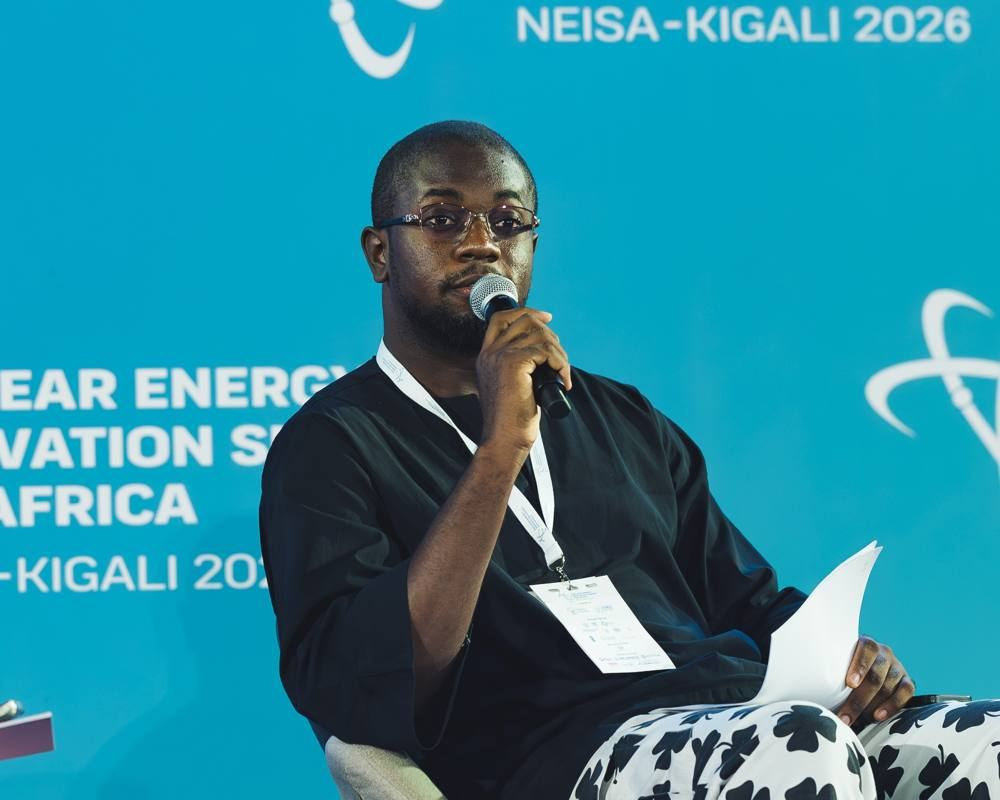
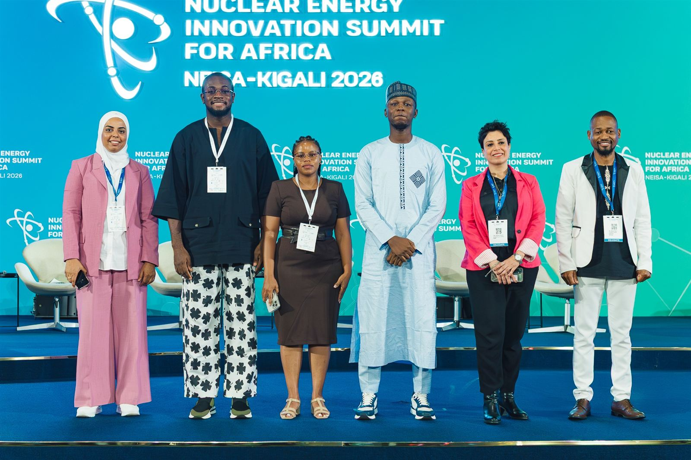
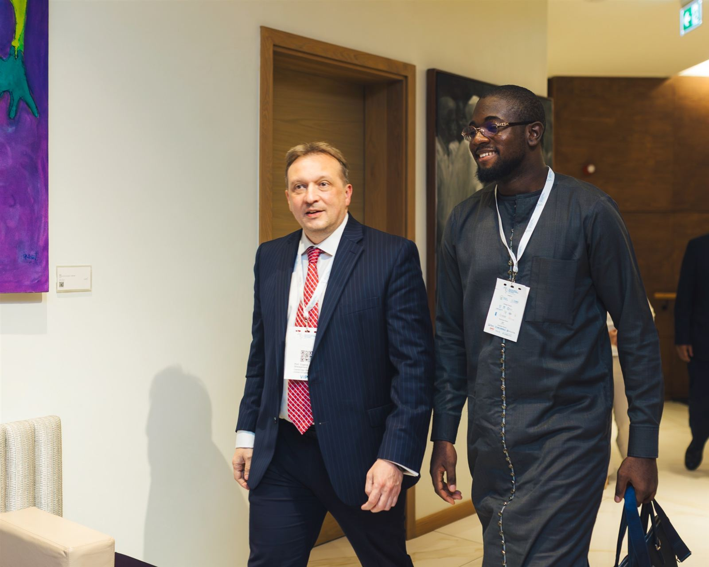
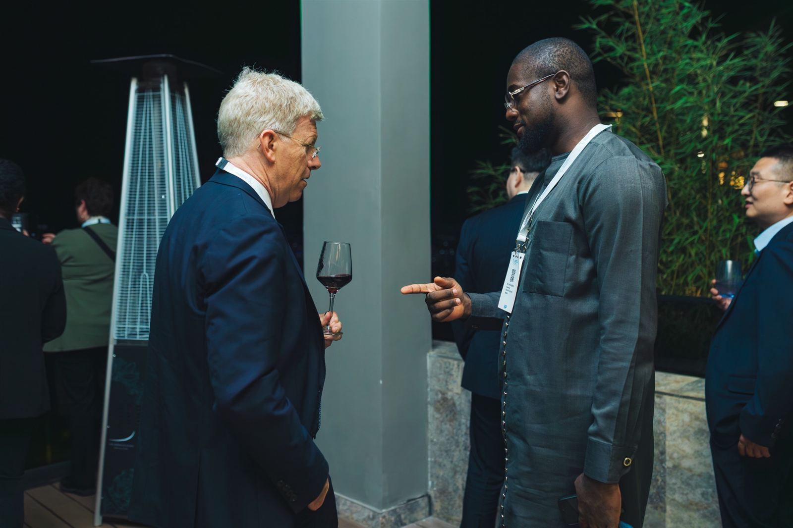

01
Nuclear Energy & Peaceful Applications
Strategy and market-entry advisory for nuclear players and governments exploring nuclear energy projects.
Nuclear policy · Strategy · Institution building
I am a nuclear expert, strategic advisor and institution builder working across nuclear energy, international security and global cooperation to advance the peaceful use of nuclear science and technology.
I work with institutions, experts and stakeholders to develop initiatives, strengthen partnerships and build the capabilities needed to meet global nuclear challenges and opportunities.

I work at the point where nuclear policy meets institution building. I have advised the OSCE Parliamentary Assembly and contributed to United Nations initiatives, including work informing the Zero Draft of the Pact for the Future. I have founded programmes that connect people and knowledge, including the African Atomic Policy Lab and the Africa Nuclear Digital Hub. In 2026, I co-organised the NEISA Youth Summit and proposed the African Nuclear Scholars Fellowship, adopted by NEISA for a planned 2027 launch. My writing has been published by the European Leadership Network and BASIC. Based in Lagos, I work globally, guided by a commitment to building useful institutions and nurturing the next generation of nuclear experts.
Responsible nuclear development needs more than technology. It needs sound policy, trusted institutions, durable partnerships and a new generation of expertise. My work connects all four, across regions and professional communities.
Strategy and market-entry advisory for nuclear players and governments exploring nuclear energy projects.
Non-proliferation, disarmament and governance, from the NPT process to Track 1.5 dialogue.
Partnership systems, fundraising, programme strategy and organisational development.
Fellowships, mentorship and open knowledge platforms for emerging nuclear professionals.
Documented contributions, stated at the level they were made.



Each highlights my contributions and the results achieved.
For nuclear companies, public institutions and partners exploring new markets. Each capability is tied to documented work.
Stakeholder engagement across institutions, industry and networks.
Evidence: ISYP toolkit (+21%); TPNW partnerships.Strategy for nuclear players and governments embarking on nuclear projects in Africa.
Evidence: independent consulting, 2026–.Governance, frameworks and enabling environments.
Evidence: Pillar III paper; Future Generations work.Analysis on non-proliferation, disarmament and security.
Evidence: ELN, BASIC publications; VCDNP mapping.Curriculum, fundraising, mentorship and research standards.
Evidence: African Atomic Policy Lab.Operational planning, proposals and knowledge-hub deliverables.
Evidence: Impact Hub Lagos; Aurora Project advisory.Roles are labelled by type.
My writing explores the choices, institutions, and international relationships that shape nuclear policy, global security, and peaceful development.
Strategy and market-entry advisory for nuclear players and governments embarking on nuclear projects in Africa.
Founding lead of the Africa Project, African Atomic Policy Lab, Digital Hub and AAVN.
Funding summit, state-agency proposals, Impact Hub Ibadan launch work.
Worked with Dr. Luca Messerschmidt, Dr. Cindy Cheng and a global team of 600+ researchers to code 15,000+ COVID-19 policies; co-managed Nigeria’s policy database and contributed to a global report on public health and social measures.
Founded a youth-focused platform for social change, published 30+ articles on public issues including youth and social development, led eight volunteers, and managed daily operations, budgets, financial controls and reporting.
My work is shaped by the communities and professional networks through which I exchange ideas, learn, and contribute.
Alongside my core nuclear policy and institution-building work, I have contributed to research, public-interest initiatives, and projects focused on stronger institutions and wider participation.
Effective Institutions Project · Researcher, November–December 2021. Assisted Ian David Moss with identifying experts for a landscape survey and authored a desk report analysing institutional improvement opportunities at the UN Security Council, UN OCHA, and UNHCR.
Chatham House / World Bank · Consultant, Lake Chad Basin Risk and Resilience Assessment. Liaised with academics, diplomats, and UNFPA officials to deepen understanding of conflict drivers and resilience factors in support of more effective development approaches.
Whole Men Caucus · Founder. Established a platform promoting male wholeness and challenging traditional toxic notions of masculinity; the platform has reached over 2,000 individuals since 2024.
Africa–Europe Partnership Summit · Panelist, Council of European Municipalities and Regions. Presented recommendations for mutually beneficial Africa–Europe partnerships.
Effective Impact Hackathon · Mentored nuclear security participants at the 2022 event hosted by Effective Altruism Sweden.
Existential risk and future generations · Delivered a teaching session on existential risk reduction and future generations protection to members of Nigeria’s National Youth Service Corps.
Effective Altruism for Christians (EACH) · As a campus representative, taught students at the University of Benin and members of religious and social organisations about high-impact careers, and provided career counselling to young people.
I do not think a meaningful career is built only through titles. It is built through the things I choose to start, the people I learn from, and the value I leave behind.
I am more than the subjects I work on. The things that guide me personally also shape how I approach my work and the relationships I build.
My Christian faith is part of how I understand responsibility, service, and the opportunities I have been given. I want my work to mean something beyond professional advancement.
My journey has been shaped by people who offered advice, encouragement, introductions, and time. I do not take that generosity for granted. It has influenced how I think about mentorship and creating opportunities for others.
I am interested in the connections between technology, society, institutions, human development, and global prosperity. I enjoy exploring unfamiliar questions without pretending to have every answer.
I have experienced uncertainty and disappointment alongside progress and success. I am learning to see a career not as a perfect plan, but as a continuing process of making choices, adapting, and contributing.
You can begin with what you know, the people around you, and the problem you care enough to work on. Start small. Keep learning. Build with others. You may be surprised by where that first step leads.
Photographs from conferences, speaking engagements and professional conversations.
I enjoy working with people who are solving important problems, developing promising ideas, building useful institutions, or creating opportunities that did not previously exist. If our interests overlap, I would be glad to hear from you.